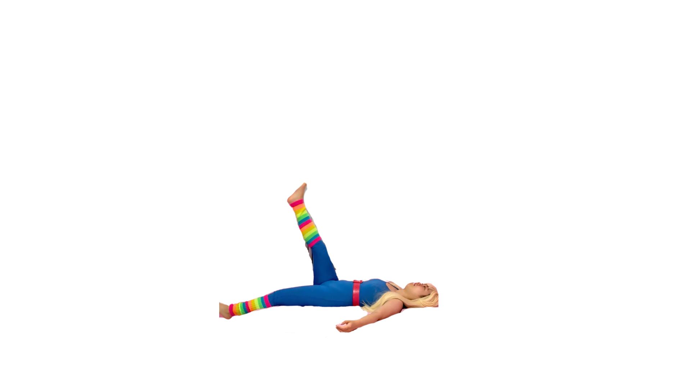

第1章：一生ダイエッター思考診断

〜チェックが多いほど、痩せにくい思考グセがあるかも〜
- ダイエットを何度も始めては挫折したことがある
- 食べすぎた翌日、罪悪感で自分を責めてしまう
- 体重が増えると、その日1日気分が沈む
- 「痩せたら〇〇する」と、痩せることを条件にしていることがある
- 他の人の体型と自分を比べて落ち込むことがよくある
- 食事制限はできるのに、なぜか体重が減らない時期がある
- 自分に合ったダイエット方法がわからず、色々試してきた
- ダイエット成功より、リバウンドの回数の方が多い
【結果】
0〜2個：比較的健全な思考
今は大丈夫！でも"ダイエッター思考"は知らないうちに育つもの。予防のためにも、ぜひ読んでみてください。
3〜5個：一生ダイエッター思考の入り口
少しずつ、体よりも"頭の中"が疲れてきているサイン。今が見直しどきです。
6〜8個：がっつり一生ダイエッター思考
頑張ってきたのに、なぜか報われない…それはあなたのせいじゃない。思考グセが邪魔をしているだけ。バービーと一緒に、その呪いから抜け出しましょう！
💬 チェックしてみてどうでしたか？
「痩せなきゃ」より「自分を知る」ことが、
本当の変化への第一歩。
ダイエットをやめるのではなく、
"消耗するダイエット"をやめよう。
